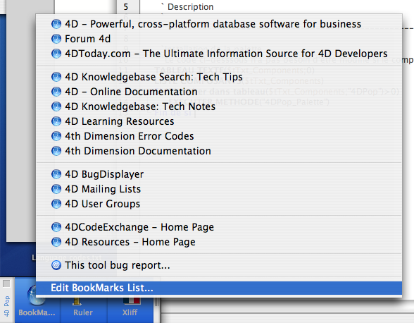
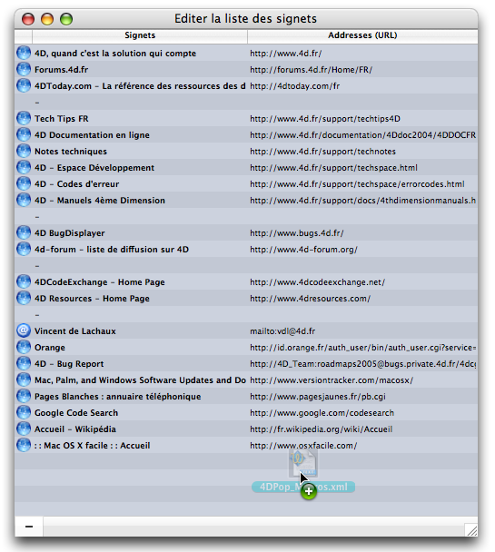

|
|
||||
|
|
||||
4DPop Bookmarks を使用すれば、開発環境でブックマークその他を管理できます。
"4DPop_Bookmarks.4dbase" フォルダを、データベースのストラクチャファイルと同階層に作成した "Components" フォルダに配置します。
"4DPop" コンポーネントを使用している場合、"Bookmark" ツールはツールパレットに表示されます。使用する際はそのボタンをクリックします。

4DPop Bookmarks はブックマークのリストで構成されたメニューを表示します。ブックマークをクリックすると、関連付けられたURLがデフォルトブラウザで表示されます。

ブックマークのデフォルトリストは、メニューから"ブックマークリストを編集..."を選択して変更できます。

ブックマークの追加は、デスクトップからファイルやフォルダ、ディスクを、あるいはブラウザからメールアドレスやURLを、またはテキストエリアからドラッグ＆ドロップすることで行います。ドラッグされた項目は、そのタイプごとのアイコンが割り当てられ、メニューに追加されます。
メニューを削除するには、項目を選択し "-" ボタンをクリックするか、"delete" キーを押します。
ブックマーク名やURLは、行をダブルクリックして変更できます。またドラッグ＆ドロップして順番を変えたり、ヘッダをクリックして並び替えたりできます。
注: ダッシュ ("-") から始まるブックマークは、メニュー中区切り線として表示されます。
このコンポーネントはコンパイル版で提供されますが、コンポーネントフォルダ内の"Sources" フォルダにはソースコードが含まれています。